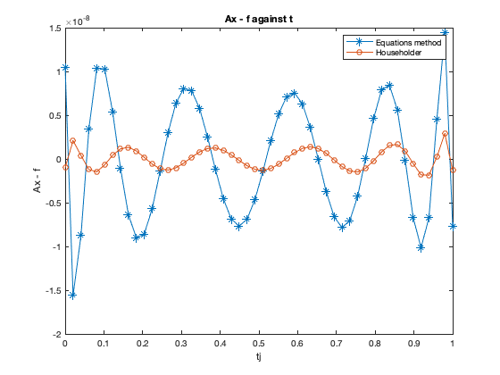

clear all;
close all;
m = 50; n=12;
t = zeros(m,n);
for i = 1:n
for j = 1:m
t(j,i) = ((j-1)/(m-1))^(n-i);
end
end
A = fliplr(t);
tj = zeros(m,1);
for j = 1:m
tj(j) = (j-1)/(m-1);
end
f = cos(4*tj);
format long
x = (A'*A)\(A'*f);
[q_c,r_c] = CGS(A); xc = r_c\(q_c'*f);
[q_m,r_m] = MGS(A); xm = r_m\(q_m'*f);
[v_h,r_h] = house(A); q_h = house2q(v_h);
x_h = r_h\(q_h'*f);
[q,r] = qr(A); xh = r\(q'*f);
[u,s,v] = svd(A); xs = (u*s*v')\f;
Table = table(x,xc,xm,x_h,xh,xs, 'VariableNames',{'Normal equation','CGS','MGS','Householder','Builtin function','SVD'})
fprintf('The Normal equation and the MGS, slightly give the same results different from SVD, CGS, built in function and the Householder, however the SVD,\n built in function and the Householder matrix give almost similar results different from CSG.\n')
plot(tj,(f - A*x),'-*')
hold on
plot(tj,(f - A*xh),'-o')
title('Ax - f against t')
xlabel('tj');ylabel('Ax - f')
legend('Equations method','Householder')
Warning: Matrix is close to singular or badly scaled. Results may be inaccurate.
RCOND = 2.800825e-17.
Table =
12×6 table
Normal equation CGS MGS Householder Builtin function SVD
____________________ ____________________ ____________________ _____________________ _____________________ _____________________
0.999999989587329 1.00001318251953 0.999999998520677 1.0000000009966 1.00000000099661 1.0000000009966
2.84029396133336e-06 -0.00225720796774053 3.05080727773958e-07 -4.22742880142516e-07 -4.22742915903599e-07 -4.22742687968714e-07
-8.00010214560535 -7.93913160486272 -8.00000853723409 -7.99998123568728 -7.99998123568936 -7.99998123569402
0.00144399781030622 -0.651916745057654 8.30962169927592e-05 -0.00031876322646563 -0.000318763182123933 -0.000318763136786353
10.6560552366266 14.2711955211007 10.6663571718914 10.6694307959049 10.6694307955344 10.6694307952905
0.0460832179149034 -11.5678311875708 3.8863814958323e-05 -0.0138202880901764 -0.0138202863975713 -0.0138202856094021
-5.81579888120301 17.0680866167968 -5.68634045840887 -5.64707562703058 -5.64707563175731 -5.64707563334524
0.231892082482534 -27.8571950090876 -0.0034568433400209 -0.0753160248519546 -0.0753160164200601 -0.0753160144223081
1.33247545357655 22.3656313402359 1.60875341462289 1.69360696399754 1.69360695433438 1.69360695282722
0.270659249202885 -8.65775021730327 0.0684591563300498 0.00603210846945386 0.00603211536110353 0.00603211596325072
-0.484158233866101 1.28940347151745 -0.400264201000408 -0.374241703362034 -0.374241706147935 -0.374241706226963
0.107803579981325 0.0280984905476861 0.0927344155691747 0.0880405760611674 0.0880405765490434 0.0880405765380861
The Normal equation and the MGS, slightly give the same results different from SVD, CGS, built in function and the Householder, however the SVD,
built in function and the Householder matrix give almost similar results different from CSG.
